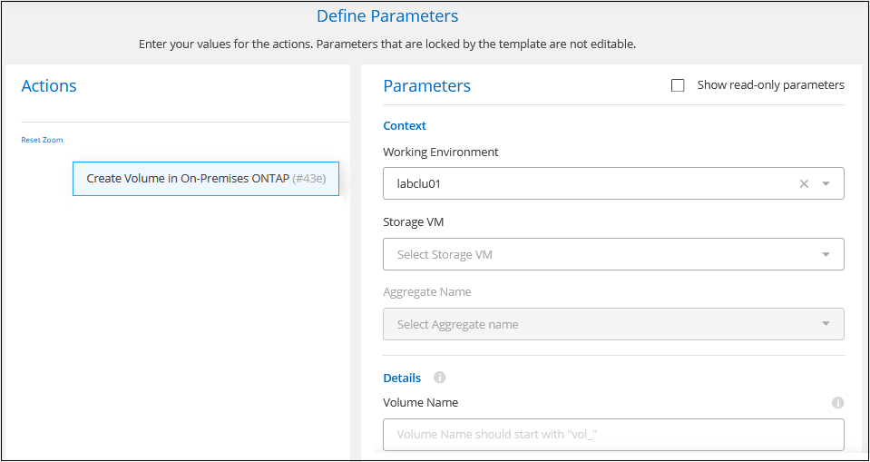
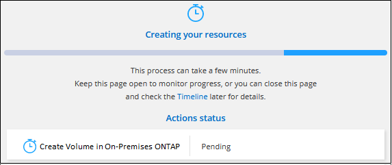

请求文档变更
请求文档变更 在 GitHub 上编辑
在 GitHub 上编辑 提供者指南
提供者指南管理内部 ONTAP 集群的存储
从 Cloud Manager 发现内部 ONTAP 集群后，您可以打开工作环境来配置和管理存储。
正在创建卷
您可以使用 Cloud Manager 在现有聚合上创建 NFS 或 CIFS 卷。您不能通过 Cloud Manager 在内部 ONTAP 集群上创建新聚合。
通过 Cloud Manager 的 " 模板 " 功能，您可以创建针对特定应用程序（例如数据库或流式服务）的工作负载要求进行优化的卷。如果您的组织已创建应使用的卷模板，请按照说明进行操作 这些步骤。
-
在 " 画布 " 页面上，双击要配置卷的内部 ONTAP 集群的名称。
-
单击 * 添加新卷 * 。
-
按照向导中的步骤创建卷。
-
* 详细信息和保护 * ：输入有关卷的基本详细信息，然后选择 Snapshot 策略。
此页面上的某些字段不言自明。以下列表介绍了可能需要指导的字段：
字段 Description Size
您可以输入的最大大小在很大程度上取决于您是否启用精简配置、这样您就可以创建一个大于当前可用物理存储的卷。
快照策略
Snapshot 副本策略指定自动创建的 NetApp Snapshot 副本的频率和数量。NetApp Snapshot 副本是一个时间点文件系统映像、对性能没有影响、并且只需要极少的存储。您可以选择默认策略或无。您可以为瞬态数据选择无：例如， Microsoft SQL Server 的 tempdb 。
-
* 协议 * ：选择卷的协议（ NFS 或 CIFS ），然后设置卷的访问控制或权限。
如果您选择 CIFS ，但尚未设置服务器，则 Cloud Manager 会提示您使用 Active Directory 或工作组设置 CIFS 服务器。
以下列表介绍了可能需要指导的字段：
字段 Description 访问控制
NFS 导出策略定义子网中可访问卷的客户端。默认情况下， Cloud Manager 会输入一个值、用于访问子网中的所有实例。
权限和用户 / 组
通过这些字段，您可以控制用户和组（也称为访问控制列表或 ACL ）对 SMB 共享的访问级别。您可以指定本地或域 Windows 用户或组、 UNIX 用户或组。如果指定域 Windows 用户名，则必须使用 domain\username 格式包含用户的域。
-
* 使用情况配置文件 * ：选择是在卷上启用还是禁用存储效率功能。
ONTAP 包含多种存储效率功能、可以减少您所需的存储总量。NetApp 存储效率功能具有以下优势：
- 精简配置
-
为主机或用户提供的逻辑存储比实际在物理存储池中提供的存储多。在写入数据时，存储空间将动态分配给每个卷而不是预先分配存储空间。
- 重复数据删除
-
通过定位相同的数据块并将其替换为单个共享块的引用来提高效率。此技术通过消除驻留在同一卷中的冗余数据块来降低存储容量需求。
- 压缩
-
通过在主存储、二级存储和归档存储上的卷中压缩数据来减少存储数据所需的物理容量。
-
* 审阅 * ：查看有关卷的详细信息，然后单击 * 添加 * 。
-
使用模板创建卷
如果您的组织已创建内部 ONTAP 卷模板，以便您可以部署针对特定应用程序的工作负载要求进行优化的卷，请按照本节中的步骤进行操作。
此模板应使您的工作更轻松，因为模板中已定义某些卷参数，例如磁盘类型，大小，协议，快照策略等。如果已预定义某个参数，则只需跳到下一个 volume 参数即可。

|
使用模板时，您只能创建 NFS 或 CIFS 卷。 |
-
在 " 画布 " 页面上，单击要配置卷的内部 ONTAP 系统的名称。
-
单击
 > * 从模板添加卷 * 。
> * 从模板添加卷 * 。
-
在 Select Template 页面中，选择要用于创建卷的模板，然后单击 * 下一步 * 。

此时将显示 _Define Parameters_页面 。

-
注： * 如果要查看这些参数的值，您可以单击 * 显示只读参数 * 复选框以显示模板锁定的所有字段。默认情况下，这些预定义字段将被隐藏，并且仅显示需要填写的字段。
-
-
在 context 区域中，工作环境将使用您启动的工作环境的名称进行填充。您需要选择要在其中创建卷的 * 存储虚拟机 * 和 * 聚合 * 。
-
为模板中未硬编码的所有参数添加值。请参见 正在创建卷 有关部署内部 ONTAP 卷所需完成的所有参数的详细信息。
-
定义完此卷所需的所有参数后，单击 * 运行模板 * 。
Cloud Manager 会配置卷并显示一个页面，以便您可以查看进度。

然后，新卷将添加到工作环境中。
此外，如果在模板中实施了任何二级操作，例如在卷上启用 Cloud Backup ，则也会执行此操作。
如果配置了 CIFS 共享、请授予用户或组对文件和文件夹的权限、并验证这些用户是否可以访问该共享并创建文件。
复制数据
您可以在 Cloud Volumes ONTAP 系统和 ONTAP 集群之间复制数据、方法是选择一次性数据复制、该复制可以帮助您将数据移入或移出云、或定期计划、这有助于灾难恢复或长期保留。
备份数据
您可以使用云备份将内部 ONTAP 系统中的数据备份到云中的低成本对象存储。此服务提供备份和还原功能，用于保护内部数据和云数据并对其进行长期归档。
扫描，映射和分类数据
Cloud Data sense 可以对企业内部集群进行扫描，以便对数据进行映射和分类，并识别私有信息。这有助于降低安全性和合规性风险，降低存储成本，并有助于您的数据迁移项目。
将数据分层到云
通过使用云分层将 ONTAP 集群中的非活动数据自动分层到对象存储，将数据中心扩展到云。